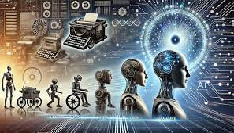

Interação tecnológica
Postado: - Vivian Varela

Imagem ilustrativa de inteligência artificialInteração tecnológica é o processo pelo qual os seres humanos interagem com a tecnologia, seja por meio de dispositivos eletrônicos, software ou outras formas de tecnologia. A interação tecnológica tem se tornado cada vez mais importante em nossas vidas, à medida que a tecnologia se torna mais integrada em nosso cotidiano. Desde o uso de smartphones e computadores até a interação com assistentes virtuais e dispositivos inteligentes, a interação tecnológica está moldando a forma como vivemos, trabalhamos e nos comunicamos.